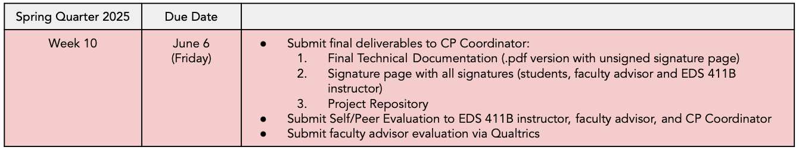

Week 10
Materials
üìï Class slides
Surveys
Schedule
1:00 - 1:15 : Final Presentations Check-in
1:15 - 1:30 : Remaining deadlines
1:30 - 2:00 : GitHub releases
2:00 - 2:30 : Secure Copy Protocol (SCP) demo - Kat Le, Bren School
2:30 - 2:50 : Capstone Wrap-up: individual and team reflection
2:50 - 4:00 : Pizza and surveys! üçïüòã
Upcoming deadlines

To do by Friday, June 6
üóÇ Complete Faculty Advisor Evaluation and Course Surveys
When? Due on Friday, June 6 at 5 PM.
How? Just complete the surveys through the links.
Thank you completing these! Your feedback really helps to improve the capstone courses!
The Capstone Advisor Evaluation is part of your MEDS academic final deliverables.
üì• Submit final Technical Documentation and GitHub repository
When? Due on Friday, June 6 at 5 PM.
How? Upload files to Box.
- Your faculty advisor must have approved it and signed before submitting it.
- Collect signature from your advisor (first), then me. DocuSign might be the easiest way to do this.
- You will need to upload two separate files for your TD:
- The final version of your TD with a blank signature page in PDF format with your Capstone Project short name
- The signature page in PDF format.
üì• Submit Peer/Self Evaluation
When? Due on Friday, June 6 at 5 PM.
How? Upload file to Box.
- Each student must complete a Capstone Project Peer & Self Evaluation Form for Winter Quarter. You can also find the form in the Bren resources website.
- Upload your evaluation form to Box and save your document with your Capstone Project short name and your full name as the file name (e.g., SaferSeafood Emily Case).
- You must also email your peer evaluation directly to your faculty advisor.
Congratulations on Finishing Your Capstone Projects!